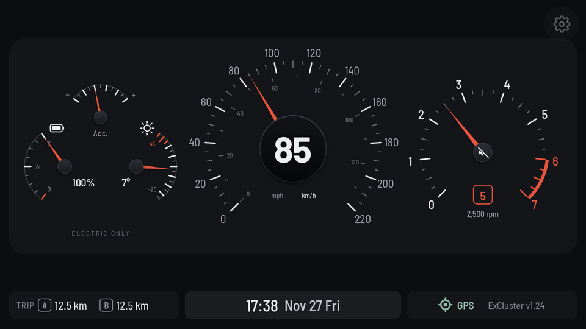
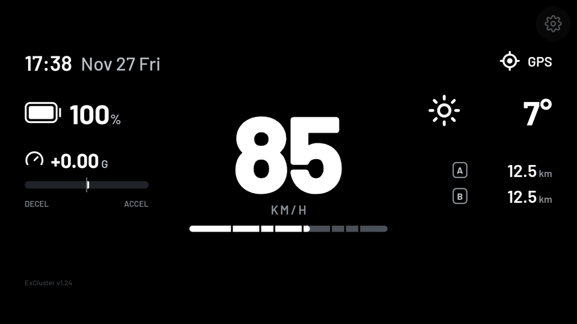
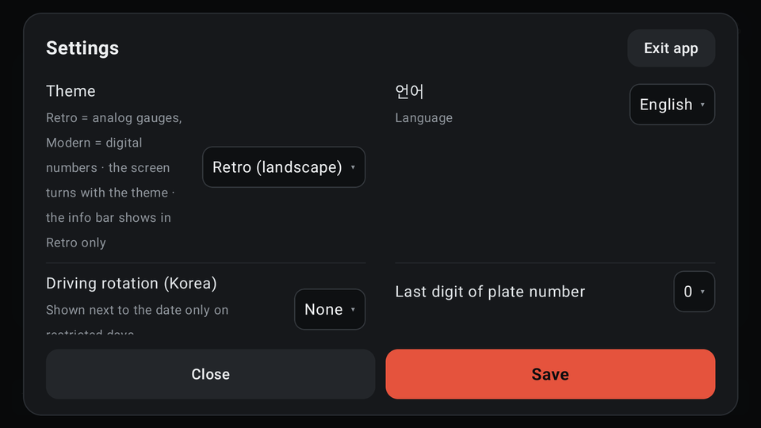
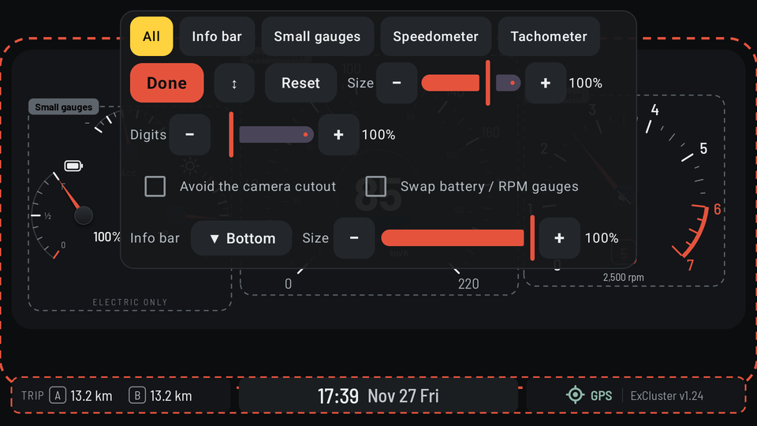
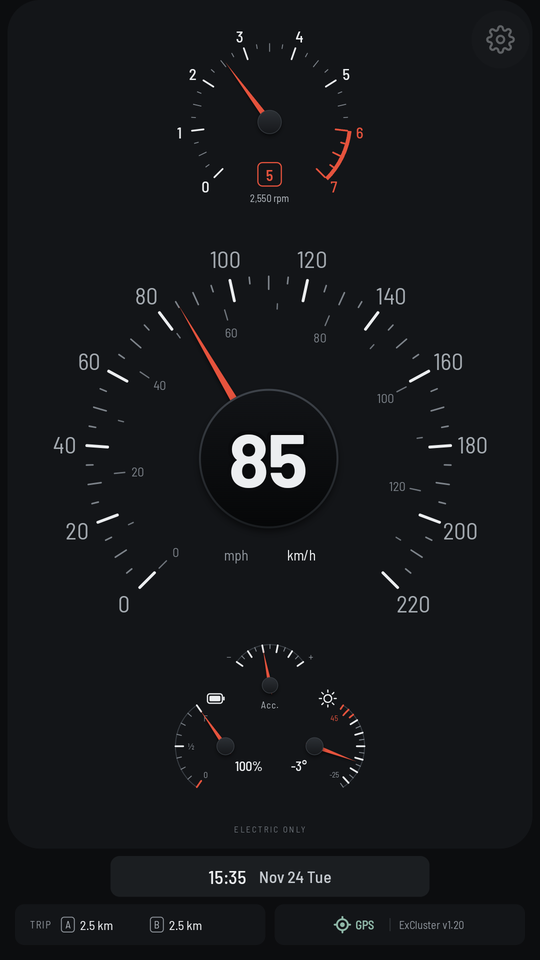

ExCluster user guide
ExCluster turns your phone into a classic car instrument cluster. This guide is for version 1.14. Items are named exactly as on the settings screens, so you can find them as you read.
Safety first. Mount the phone where it does not block your view or an airbag, and secure it so it cannot fall or slide when braking or on bumps. Do not operate the app while driving; change settings only when stopped.
1. Getting started
- Mount the phone firmly in a holder.
- Open the app and tap Start. Allow the location (GPS) permission. The app uses location only while it is on the screen.
- A safety notice appears first. Read it and continue: the full-screen cluster starts and the screen stays on.
- To try it before using it in the car, tap Demo mode. It shows a simulated drive without GPS.
2. What you can do on the screen

Retro (landscape): the speedometer in the middle, the virtual RPM on the right, the acceleration, battery and temperature gauges on the left, and trips, clock and GPS state in the bottom row.
Modern (landscape): a big digital number and a speed bar. Every zone can be moved separately.- Open the settings: tap the gear icon at the top right, or press and hold the cluster for 0.8 s.
- Reset trip A or B: press and hold the trip number for 1.5 s.
- GPS state: a green "GPS" is normal; "EST" means GPS dropped out (for example in a tunnel) and the speed is being estimated from the motion sensors.
- The virtual RPM and gear indicator follow your speed for the feel of a classic cluster; they are unrelated to the real car.
- With Android Auto on, tapping the battery area switches between the phone's and the car's battery, and tapping the trip area switches between trips and the odometer.
3. Easy settings
The first page of the settings.

The top of the easy settings. Further down: Sound, Detailed settings, Read the safety notice again, Copy test info.| Item | What it does |
|---|---|
| Theme | Retro (analog needles) or Modern (digital numbers), each in landscape or portrait. The screen orientation follows the theme |
| Language | Auto, Korean, English |
| Driving rotation (Korea) | Shows the Korean 5-day / 10-day no-driving-day badge next to the date, only on restricted days |
| Last digit of plate number | The number used for the rotation |
| Exclude weekends | Leaves out weekends for the date-based 5-day and 10-day rotation |
| HUD mode (windshield) | Mirrors the screen top to bottom so it reads correctly when the phone lies on the dash and reflects in the windshield |
| Sound | When on, Retro plays the engine and Modern plays your own sound, both following your driving. Off by default |
| Detailed settings | Opens section 4 |
| Read the safety notice again | Shows the first-start safety notice again |
| Copy test info | Copies the app version, phone model, Android version and display settings (to paste into a question or test result; no location or personal data) |
4. Detailed settings
Open them with Detailed settings on the easy page. The search field at the top finds an item by name or description.
Display
| Item | What it does |
|---|---|
| Screen position & size | Goes to Adjust (section 5) |
| Screen orientation | Stays landscape whatever the system rotation setting. Pick a fixed side when the phone lies down for HUD |
| Needle effects | Speedo trail, RPM bounce, road vibration and digit shake over 100 km/h on or off |
| Background photo | Modern theme. The photo is stored on this phone only |
| Darken photo / Blur photo | Darker for brighter photos, blur if you like |
| Darker at night | Halves the photo brightness after sunset |
| Text backing | Keeps text readable over a photo |
| Widgets | Choose which zones show on the Modern screen (speed is always shown) |
Driving
| Item | What it does |
|---|---|
| Match car speedometer | Car speedometers read high, so this lifts the app's display to match. Only the display changes; trips and logs use the true speed |
| Offset full from | At and above this speed the whole offset is added; below it grows linearly from 0 km/h |
| Tire / Tire size | For the virtual RPM. Enter the sidewall marking, for example 245/45R19 |
| Gearbox | Gear ratios and shift points of the virtual RPM |
| Motion sensor direction | Default: phone upright with the screen facing you |
| Learn mount direction | Finds "forward" from GPS speed changes when you pull away or brake, so any phone angle works |
| Glitch on speed when GPS drops | In tunnels the number is a sensor estimate, shown with colour fringing and brief tears |
HUD
| Item | What it does |
|---|---|
| Top width / Height | Slightly reshape the screen for the raked windshield (HUD mode only) |
| Screen brightness | Auto or fixed |
| Brightness correction | Shifts the auto brightness darker or brighter; HUD starts brighter because the windshield reflects little |
| Fixed level | The brightness used when fixed |
Sound
| Item | What it does |
|---|---|
| Retro theme sound | The engine sound or your own sound. The engine sound needs a moment the first time and uses about 75 MB of storage |
| Choose my sound | Uses a short part of an audio file you choose, changing with speed and acceleration |
| Volume | Up to 150%. Above 100% helps when navigation is much louder |
| Silence when GPS is lost | Quiet while there is no signal |
| Do not lower other audio | On: your music is left alone and the sound is mixed with it. Off: music is lowered only while the sound is audible |
| Lower music for voice alerts | Music gets quieter only while the overheating warning is spoken |
| Check the voice | Speaks one sentence in the phone's text-to-speech voice (change the voice in the phone settings) |
Car data
| Item | What it does |
|---|---|
| Android Auto | On: shows the car's odometer, battery and range on the cluster and uses the car speed as a back-up when GPS is lost. Off: no car data is read |
| Car data status | The state of the values received from the car |
Power & heat
| Item | What it does |
|---|---|
| Dim at night & in tunnels | Lowers the text brightness after sunset or in a tunnel to cut glare |
| Overheat guard | Warns when the phone gets hot and, step by step, simplifies the screen and stops sound and logging. Keep it on for a dashboard in summer sun |
| Running in the background | GPS and sensors stop when the app leaves the screen and start again when you return |
| Weather | Rain and snow are judged from the precipitation of four forecast models; a forecast can differ from what you see |
| Demo mode | A simulated drive without GPS. A faint "DEMO" shows on the screen while it is on. Cruise holds the current speed; +5 / −5 go to the next multiple of 5 |
Hidden menu (for developers and testers). Tapping "ExCluster v…" at the very bottom of the settings 7 times opens "Debug mode" and "Drive logs". They record speed and sensor values on the phone for analysing a problem. You do not need them normally.
5. Adjust (screen position and size)
In the detailed settings, tap Adjust under Screen position & size to get the bar. If you have unsaved changes, the app asks "Save your changes and adjust?", saves, and opens Adjust right away.

The adjust bar. The dashed line shows the area the cluster uses.- Drag to move, pinch to resize: fit the cluster to the area visible through the steering wheel.
- Size / Digits: sliders for the whole cluster and the speed digits (in the Modern theme, the size of the speed zone).
- Info bar top or bottom, size: in the Retro theme, where the bottom row (trips, clock, GPS) goes and how big it is.
- Avoid the camera cutout: by default the screen fills the whole display, camera cutout included. Turn this on if the cutout hides part of it.
- Swap battery / RPM gauges (Retro): the small gauges (battery and others) and the RPM gauge trade places; in portrait the RPM goes to the top.
- Modern theme: tap a zone name at the top (All, Speed, Time and so on) to move and resize each zone separately.
- ↕ moves the bar up or down. Reset restores the position and size. Done saves.

Retro (portrait) with the gauges swapped: the RPM comes to the top.6. Troubleshooting
| Problem | What to try |
|---|---|
| The speed differs from the car's speedometer | The app speed is GPS-based. Use Match car speedometer in the detailed settings |
| The camera cutout hides part of the screen | Turn on Avoid the camera cutout in Adjust |
| The speed stays 0 or the GPS does not lock | Check the location permission and the phone's location switch. Indoors and in tunnels it locks late |
| No engine sound on Android Auto | Turn Do not lower other audio on and off to compare. You can also raise the volume |
| The engine sound is drowned out by navigation | Raise Volume in the detailed settings (up to 150%) |
| The phone gets too hot | Keep Overheat guard on, avoid direct sun and connect the charger only when needed |
| Settings look different after an update | Settings are stored on the phone and kept across updates |
Contact: wavullet@gmail.com